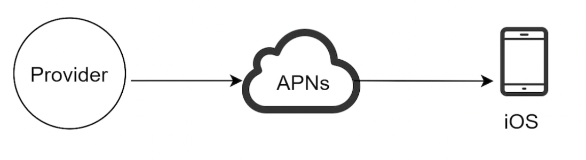
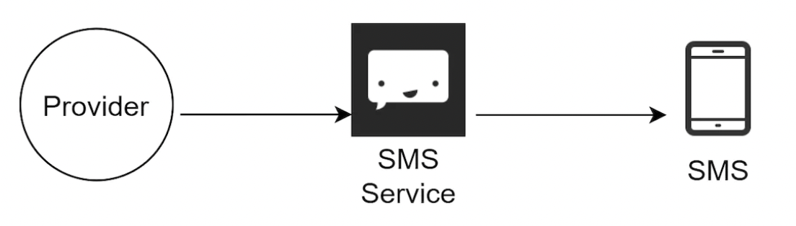
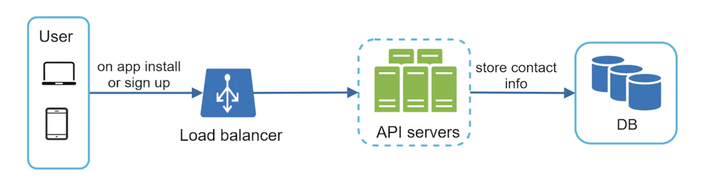
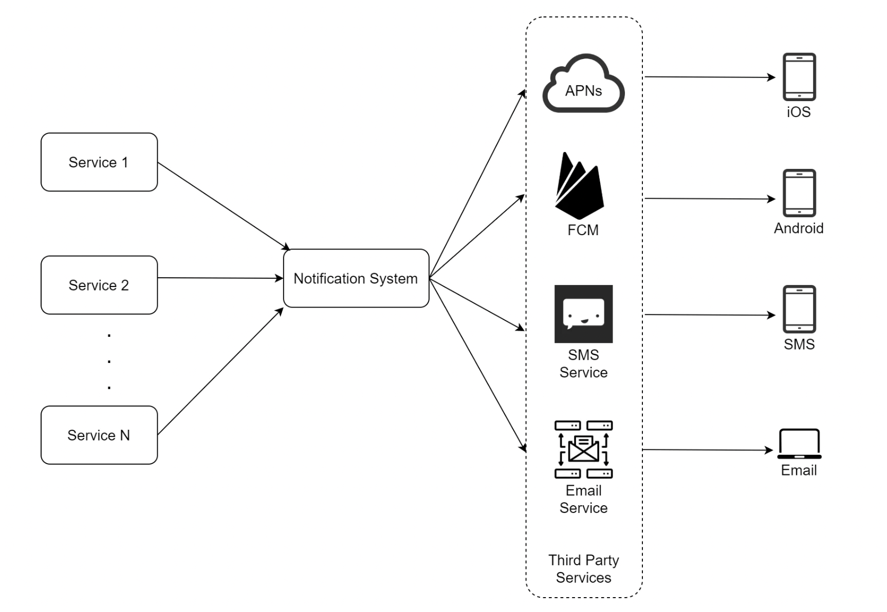
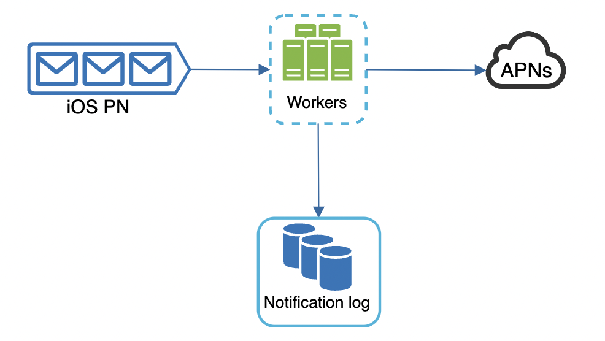
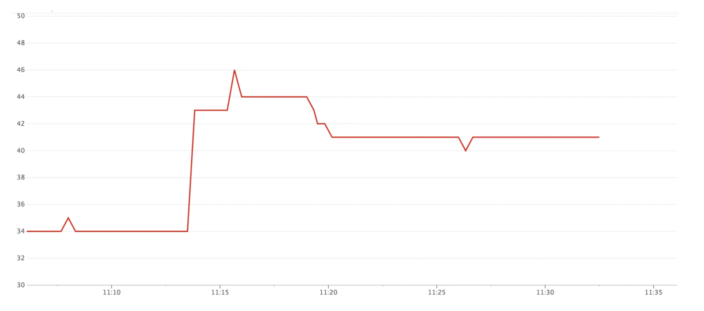
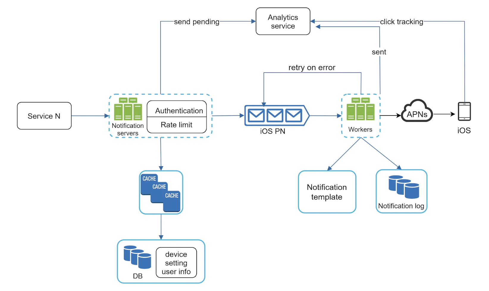

Design a Notification System
Notification systems are a popular feature in many applications - it alerts a user for important news, product updates, events, etc.
There are multiple flavors of a notification: * Mobile push notification * SMS * Email
Step 1 - Understand the problem and establish design scope
- C: What types of notifications does the system support?
- I: Push notifications, SMS, Email
- C: Is it a real-time system?
- I: Soft real-time. We want user to receive notification as soon as possible, but delays are okay if system is under high load.
- C: What are the supported devices?
- I: iOS devices, android devices, laptop/desktop.
- C: What triggers notifications?
- I: Notifications can be triggered by client applications or on the server-side.
- C: Will users be able to opt-out?
- I: Yes
- C: How many notifications per day?
- I: 10mil mobile push, 1mil SMS, 5mil email
Step 2 - Propose high-level design and get buy-in
This section explores the high-level design of the notification system.
Different types of notifications
How do the different notification types work at a high level?
iOS push notification
 * Provider - builds and sends notification requests to Apple Push Notification Service (APNS). To do that, it needs some inputs: * Device token - unique identifier used for sending push notifications * Payload - JSON payload for the notification, eg:
{
"aps":{
"alert":{
"title":"Game Request",
"body":"Bob wants to play chess",
"action-loc-key":"PLAY"
},
"badge":5
}
}
Android Push Notification
Android adopts a similar approach. A common alternative to APNS is Firebase Cloud Messaging:

SMS Message
For SMS, third-party providers like Twilio are available: 
Although clients can setup their own mail servers, most clients opt-in to use third-party services, like Mailchimp:

Here's final design after including all notification providers:

Contact info gathering form
In order to send notifications, we need to gather some inputs from the user first. That is done at user signup: 
Example database tables for storing contact info:

Notification sending/receiving flow
Here's the high-level design of our notification system:  * Service 1 to N - other services in the system or cron jobs which trigger notification sending events. * Notification system - accepts notification sending messages and propagates to the correct provider. * Third-party services - responsible for delivering the messages to the correct users via the appropriate medium. This part should be build \w extensibility in case we change third-party service providers in the future. * iOS, Android, SMS, Email - Users receive notifications on their devices.
Some problems in this design: * Single point of failure - only a single notification service * Hard to scale - since notification system handles everything, it is hard to independently scale eg the cache/database/service layer/etc. * Performance bottleneck - handling everything in one system can be a bottleneck especially for resource-intensive tasks such as building HTML pages.
High-level design (improved)
Some changes from the original naive design: * Move database & cache out of the notification service * Add more notification servers & setup autoscaling & load balancing * Introduce message queues to decouple system components
 * Service 1 to N - services which send notifications within our system
* Notification servers - provide APIs for sending notifications. Visible to internal services or verified clients. Do basic validation. Fetch notification templates from database. Put notification data in message queues for parallel processing.
* Cache - user info, device info, notification templates
* DB - stores data about users, notifications, settings, etc.
* Message queues - Remove dependencies across components. They serve as buffers for notifications to be sent out. Each notification provider has a different message queue assigned to avoid outages in one third-party provider to affect the rest.
* Workers - pull notification events from message queues and send them to corresponding third-party services.
* Third-party services - already covered in initial design.
* iOS, Android, SMS, Email - already covered in initial design.
* Service 1 to N - services which send notifications within our system
* Notification servers - provide APIs for sending notifications. Visible to internal services or verified clients. Do basic validation. Fetch notification templates from database. Put notification data in message queues for parallel processing.
* Cache - user info, device info, notification templates
* DB - stores data about users, notifications, settings, etc.
* Message queues - Remove dependencies across components. They serve as buffers for notifications to be sent out. Each notification provider has a different message queue assigned to avoid outages in one third-party provider to affect the rest.
* Workers - pull notification events from message queues and send them to corresponding third-party services.
* Third-party services - already covered in initial design.
* iOS, Android, SMS, Email - already covered in initial design.
Example API call to send an email:
{
"to":[
{
"user_id":123456
}
],
"from":{
"email":"from_address@example.com"
},
"subject":"Hello World!",
"content":[
{
"type":"text/plain",
"value":"Hello, World!"
}
]
}
Example lifecycle of a notification: * Service makes a call to make a notification * Notification service fetch metadata (user info, settings, etc) from database/cache * Notification event is sent to corresponding queue for processing for each third-party provider. * Workers pull notifications from the message queues and send them to third-party services. * Third-party services deliver nofications to end users.
Step 3 - Design deep dive
In this section, we discuss some additional considerations for our improved design.
Reliability
Some questions to consider in terms of making the system reliable: * What happens in the event of data loss? * Will recipients receive notifications exactly once?
To avoid data loss, we can persist notifications in a notification log database on the workers, which retry them in case a notification doesn't go through: 
What about duplicate notifications?
It will occasionally happen as we can't guarantee exactly-once delivery (unless the third-party API provides idempotency keys). If they don't we can still try to reduce probability of this happening by having a dedup mechanism on our end, which discards an event id if it is already seen.
Additional components and considerations
Notification templates
To avoid building every notification from scratch on the client side, we'll introduce notification templates as many notifications can reuse them:
BODY:
You dreamed of it. We dared it. [ITEM NAME] is back — only until [DATE].
CTA:
Order Now. Or, Save My [ITEM NAME]
Notification setting
Before sending any notification, we first check if user has opted in for the given communication channel via this database table:
user_id bigInt
channel varchar # push notification, email or SMS
opt_in boolean # opt-in to receive notification
Rate limiting
To avoid overwhelming users with too many notifications, we can introduce some client-side rate limiting (on our end) so that they don't opt out of notifications immediately once they get bombarded.
Retry mechanism
If a third-party provider fails to send a notification, it will be put into a retry queue. If problem persists, developers are notified.
Security in push notifications
Only verified and authenticated clients are allowed to send push notifications through our APIs. We do this by requiring an appKey and appSecret, inspired by Android/Apple notification servers.
Monitor queued notifications
A critical metric to keep track of is number of queued notifications. If it gets too big, we might have to add more workers: 
Events tracking
We might have to track certain events related to a notification, eg open rate/click rate/etc.
Usually, this is done by integrating with an Analytics service, so we'll need to integrate our notification system with one.

Updated design
Putting everything together, here's our final design: 
Other features we've added: * Notification servers are equipped with authentication and rate limiting. * Added a retry mechanism to handle notification failures. * Notification templates are added to provide a coherent notification experience. * Monitoring and tracking systems are added to keep track of system health for future improvements.
Step 4 - Wrap up
We introduced a robust notification system which supports push notifications, sms and email. We introduced message queues to decouple system components.
We also dug deeper into some components and optimizations: * Reliability - added robust retry mechanism in case of failures * Security - Appkey/appSecret is used to ensure only verified clients can make notifications. * Tracking and monitoring - implemented to monitor important stats. * Respect user settings - Users can opt-out of receiving notifications. Service checks the user settings first, before sending notifications. * Rate limiting - Users would appreciate if we don't bombard them with a dozen of notifications all of a sudden.